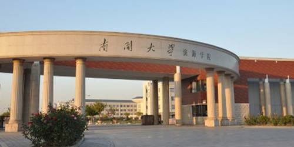
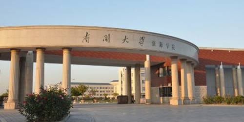

每日升旗、降旗时间时间：06点15分、20点00分
账号：
密码：

河北师范大学国旗队
Hebei Normal
【师大青年说第一期】河北师大国旗队明星赵慧颖
编辑：赵亚新 排版：刘金辀 摄影：郭东辉 点击数：666 更新时间：2017/06/10
我叫赵慧颖，1996年出生，是数信学院大四的毕业生。就在前不久，我被成功保送到南开大学。说起我的毕业故事，不得不提到的就是大学生国旗队的经历了。
初入大学校园时，看着那排的满满的课表，听着老师们讲的抽象的专业课知识，很长一段时间我都处于云里雾里的状态，找不到方向，感觉很迷茫。到了大一下半年，河北师范大学大学生国旗队纳新了。我看到消息后，怀着对国旗的敬仰加入了。
.jpg)
初入国旗队时，我们接受着高强度的训练——炎炎烈日下站军姿一站就是一个多小时。 在人们看来极为简单的齐步走，我们之间需要磨合无数次，为了踢出铿锵有力的正步，我们要端着腿咬牙坚持。 这些都远比我想象的艰难得多，特别是端着腿的那几分钟对我来说尤为艰难，因为过程中我总是落地，坚持不到最后，我也为此多次受到班队长的苛责。那时候觉得自己特别没用，甚至想过放弃。 班队长们虽然在训练场上对我们要求苛刻，但生活中对我们都十分体贴照顾。
细心的班长看出了我的异常并找我谈话，她问我有没有找过原因，动作是否掌握了要领。这才想起班队长们强调过的端腿时要提胯，自己一直没有认真练习过。那时候觉得自己特别没用，甚至想过放弃。回去之后我便开始练习提胯端腿，无论在操场还是回到宿舍，一有空闲时间我就端着腿，给自己计时，看看自己能坚持多长时间，起初还是总会落下来，但经过一遍遍的练习，我能坚持的时间慢慢变长，到后来我能够端着腿坚持很长时间不落地。
.jpg)
.jpg)
.jpg) 

在之后的一次个人队列比武大赛中我还获得了一等奖的好成绩。就这样，我坚持了下来并走到了最后。我也因此有了意料之外的收获，国旗队练就了我坚毅的品质。这是一个潜移默化的过程。当觉得快坚持不下去的时候，再坚持一下，迎接你的将是华丽的蜕变。 我每天都坚持去图书馆温习所学知识，认真完成作业，不懂的问题即时与老师或同学交流讨论，坚持不懈的努力使我的成绩日异提升，最终以优异成绩保送到南开大学。
技术支持：河北师范大学软件学院 作者：MC金柚（刘金辀） 指导教师：刘孟祎
版权所有河北师范大学 冀ICP备字030002号冀公网安备 13010802000630号
地址：河北省石家庄市南二环东路20号 邮编：050024 制作维护：河北师范大学计算机网络中心


.jpg)
.jpg)
.jpg)